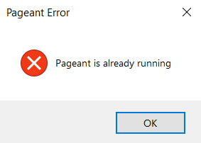

01_GIT
Установка Git
- Установить:
- Открыть Проводник ⇒ в строке адреса написать cmd ⇒ нажать Enter (откроется командная строка): В командной строке написать команду ssh-keygen (Enter, Enter, Enter, ... Всё по дефолту)
- Открыть PuTTygen:
- load key (приватный ключ, который без расширения, созданный ssh-keygen)
- save private key, without passphrase (имя_ключа.ppk)
- Создать аккаунт на сайте GitHub:
- придумать понятный никнейм
- загрузить аватарку
- сообщить свой никнейм преподавателю для получения доступа к курсу
- Зайти в свой аккаунт GitHub ⇒ Аватар (правый верхний угол) ⇒ Settings ⇒ SSH and GPG keys (в левом столбце) ⇒ New SSH key ⇒ вставить в поле key содержимое публичного ключа (имя_ключа.pub) (за исключением последних символов до знака =) ⇒ нажать add key
- Запустить Pageant:
Если вы получаете такую ошибку:

Тогда ваш Pageant уже запущен и нужно открыть его таким способом:

После запуска Pageant добавляем .ppk ключ Add Key (имя_ключа.ppk)

- Зайти на репозиторий с лабораторными работами STM32_labs:
Code ⇒ Local ⇒ скопировать URL
- Зайти в проводник (где вы хотите разместить папку с лабораторными работами) ⇒ щелкнуть правой кнопкой мыши ⇒ Git Clone...
⇒ в URL вставить скопированный с сайта URL ⇒ Enter


Если все прошло успешно то поздравляю, вы склонировали репозиторий с лабораторными работами к себе на компьютер!
Как работать с Git:
- Для большего понимания работы Git советуем посмотреть несколько видео про git из плейлиста
- Или целый плейлист про гит
Контрольные вопросы по git:
- Что такое репозиторий?
- Чем отличается локальный и удаленный репозиторий?
- Что означают команды:
- git add
- git commit
- git push
- Что такое ветки и как с ними работать?
- git merge
- switch/checkout to ...